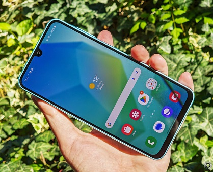

A Samsung Galaxy (hangul: 삼성 갤럭, 2015 óta SΛMSUNG Galaxy-ként stilizálva,[1] korábban Samsung GALAXY-ként stilizálva, rövidített alakja: SG) okostelefonok és táblagépek termékcsaládja, amelyet a Samsung Electronics tervez, gyárt és forgalmaz. A termékcsalad részei a Samsung Galaxy S sorozat, a Samsung Galaxy Tab tablet sorozat, a Samsung Galaxy Note sorozat, az összehajtható Samsung Galaxy Z sorozat, a Samsung Galaxy Gear okosóra (a széria későbbi verziói elhagyták a "Galaxy" jelzést a Samsung Galaxy Watch 2018-as bemutatójáig).

A Samsung Galaxy készülékek a Google által fejlesztett Android operációs rendszert használják. A Samsung Galaxy TabPro S az első olyan Galaxy jelzéssel ellátott készülék, amely Windows 10 alatt fut. A Galaxy Watch az első Galaxy márkajelzésű okosóra, a Gear 2014-től 2017-ig megjelent későbbi verziói óta. 2019 áprilisában a cég bejelentette, hogy eltolja a Samsung Galaxy Fold nevű összehajtható okostelefonja bemutatóját, mivel többen arra panaszkodtak, hogy törött a képernyője.[2] A széria 2019 szeptemberében mutatkozott be.